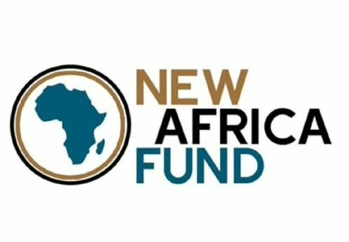

Good Governance Advocacy International has been selected for the Africa fundraising incubator
Based on NAF's stated model, GGAI appears to have several potentially relevant characteristics: it is an Africa-based civil-society organization, has a governance/advocacy mission, conducts public-interest activities and has an established record of advocacy and public engagement.
NAF evaluates organizations through competitive processes rather than simply funding organizations that contact them. NAF's published list of AFI grantees includes several Nigerian organizations, including:
KOA Education Foundation — Nigeria
The Bridge Foundation for Youth Leadership — Nigeria
Let Cerebral Palsy Kids Learn — Nigeria
ChananHill Social Enterprise — Nigeria
Youth Empowerment Foundation — Nigeria
Legend Golden Care Foundation — Nigeria
We Aid Initiative — Nigeria
The Custodians of African Literature — Nigeria.
That demonstrates that Nigeria-based organizations are within the fund's actual geographic reach. In 2026, NAF operated the Africa Fundraising Incubator (AFI). The program was open to NGOs, CBOs and social enterprises registered in any of the 54 African Union member states.
What is New Africa Fund (NAF)?
The New Africa Fund (NAF)
New Africa Fund was founded in 2021 by two former Peace Corps Volunteers. It is a U.S. 501(c)(3) public charity whose stated purpose is to support locally led organizations in Africa and promote sustainable change. It says it now works with organizations in more than a dozen African countries.
Its approach is somewhat different from conventional project funders. NAF says it generally provides unrestricted funding, rather than tightly restricting grants to individual projects. It looks at the strength, mission and track record of the organization itself.
Official website of the New Africa Fund is: https://www.newafricafund.org/

Images Of The Day
The media speaks for itself